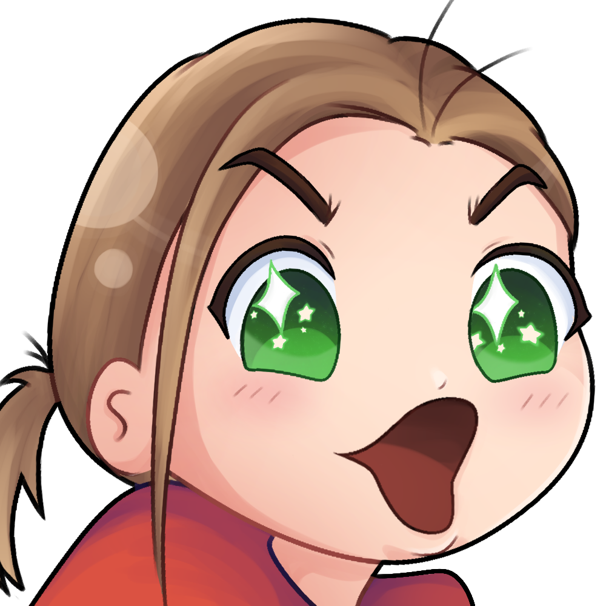

Where we come from
Hi y'all I'm David, the creator of the site, and I want to start this about page by talking about where I come from in the world of extreme sports.
I was a kid that enjoyed doing sports that others often found "extreme".
The thrill of roller coasters, riding jet skis, or just riding a skateboard brought me so much joy growing up.
As I got older, I got into snowboarding, roller skating, surfing, bmx, among others and I found myself learning to master these sports but always looking for something new.
What we do
The mission for this page is to bring that joy I felt as a kid.
That mix of childhood joy and adventure mixed with the escape from reality.
That moment when you forget about everything else and just actually live, that's the goal.
The hope for the is that everyone can come together, share stories, meet people, and just bask in the adrenaline rush you'll get.
Meet our "Steve Jobs"
Howdy. As I said before, I'm David and I'm currently a CS student about to graduate.
Yes, I know. I'm going to be jobless and will make more money being a garbage man with this job market.
My entire hobbies revolve around extreme sports and I can't get enough of them. My free time is either sports or hitting the gym. Everything else is project time.
I hope you enjoy the page!
Meet our Team
Rocky (Ricky) -> Our team's biggest rock climber.
Rocky is a bouldering master having actually climbed V15's and flies through climbs that I (David) struggle with.
He's the mastermind for most of the Rock climing side of this site.
River (Banks) -> Our team's gnarliest surfer.
This guy is probably the biggest insitagtor I know. This bro had me going from surfing 3 foot waves to 8 footers.
Gave me the scariest and best surfing experience ever.
Well, our team includes at least one person you know.
YOU!
Our "team" is the community, everyone who shows up and decides to be a part of the experience.